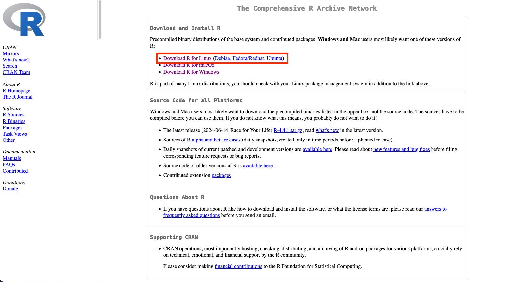
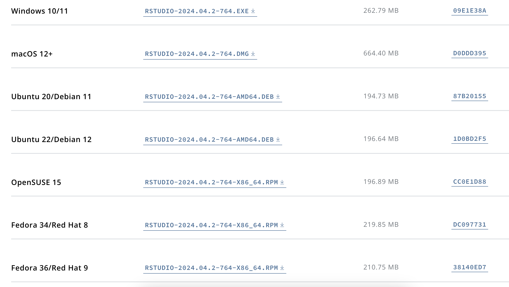

Background
Why do we want to learn and use R and RStudio
R and Rstudio are powerful tools for statistical analysis. R is an open-source language, meaning it is both free and supported by a large, active community. RStudio provides an intuitive and user-friendly interface, making using R more productive. The R package (more on this later) ecosystem allows users to extend its functionality for various types of analysis. Additionally, it facilitates reproducible code and reports and allows researchers to share their work with others.
What is R and RStudio
R is a free software environment for statistical computing and graphics. RStudio is an integrated development environment (IDE) for R. To understand why we might want to use R with RStudio. We will use the analogy from Modern Dive book.
At its simplest, R is like a car’s engine while RStudio is like a car’s dashboard

R installation
First, install R. The R language is available through the The Comprehensive R Archive Network website. In the next sections, we will show how to install R for different operating systems: Windows, MacOS, and Linux.
Windows
Steps:
- Click “Download R for Windows”

- Click “base”

- Click the link at the top of the page. It should say something like “Download R-4.4.1 for Windows”, where the numbers would change to the latest version.

- Run the downloaded executable file.

- Allow the installer to change your device.

- Follow the prompt instructions. You do not need to customise the startup.
MacOS
Steps:
- Click “Download R for macOS”

- Under the “Latest release:”, click the .pkg base on your system architecture. If you are using Apple silicon (M1 onwards) Macs, click the “R-4.41-arm64.pkg”, otherwise, click the “R-4.4.1-x86_64.pkg”.

- After finishing downloading the .pkg, double-click on it.

- Follow the installer’s instructions. It will involve reading through some documents and clicking continue or install.

- Once the installation is complete, click “Close” to exit the installation process.
Linux
Steps:
- Click “Download R for Linux”.

- Click on the directory based on the Linux version you have.

- Follow the instructions on the website.
RStudio installation
The RStudio can be downloaded from the Posit website. Scroll down to All Installers and Tarballs and download the RStudio version for your operating system.
Windows
Steps:
- Click the .exe file. It should look similar to “RSTUDIO-2024.04.2-764.EXE”. The number will be different based on the latest version.

- Run the executable file to install RStudio.

- Allow the installer to make changes on your computer.

Follow the prompts.
Search for RStudio on your computer and open it. You are now ready to learn R!
MacOS
Steps:
- Click the .dmg file. It should look similar to “RSTUDIO-2024.04.2-764.DMG”. The number will be different based on the latest version.

- Drag RStudio.app into the Applications folder. Now you are ready to use R!

Linux
Steps:
- Click download the file based on your Linux version.

- Follow the instructions prompts.